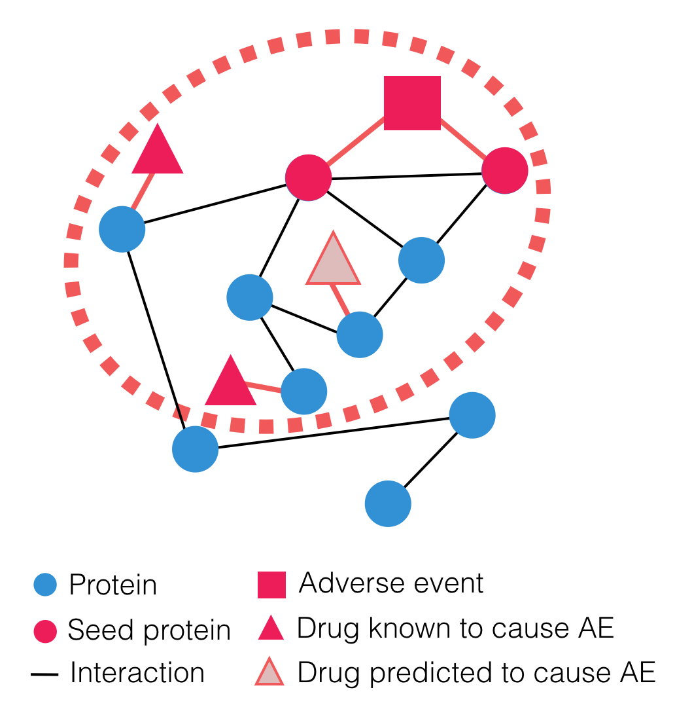
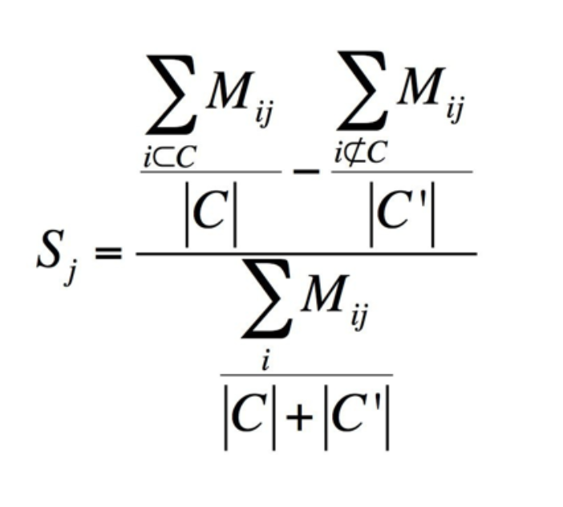

MADSS: Modular Assembly of Drug Safety Subnetworks
Source code available on GitHub.
 MADSS (Modular Assembly of Drug Safety Subnetworks) is a network analysis framework that predicts drug safety by scoring every protein in a human protein-protein interaction network (interactome) on its connectivity to a "seed" set of proteins with a genetic link to a phenotype of interest (e.g. disease, adverse drug reaction). Proteins receiving high connectivity scores constitute a neighborhood within the interactome; drugs targeting proteins within this neighborhood are predicted to be involved in mediating the phenotype of interest.
To build these neighborhoods, MADSS uses four adapted pairwise connectivity functions to score every protein in the interactome on its connectivity to the seed set (click for formula):
- Mean first passage time (MFPT)
- Betweenness centrality (BC)
- Shared neighbors (SN)
- Inverse shortest path (ISP)
Each of these functions is adapted to the following formulation:

where C refers to the seed set, C' refers to the complementary set of proteins, and Sj is the metric connectivity score. Mij represents the pairwise connectivity between protein j and protein i. If Mij is higher for seeds than non-seeds, then Sj will be positive, and the protein is more connected to the seeds than the rest of the network.
Proteins receiving high connectivity scores thus constitute a subnetwork of the global interactome, which we call a neighborhood. We then assign drugs the connectivity score of their most highly connected target.
Citation
We created and validated MADSS in Lorberbaum, et al., Systems Pharmacology Augments Drug Safety Surveillance. Clinical Pharmacology & Therapeutics (2015) using four clinically relevant adverse events (AEs). We created a model for each of these AEs by training a random forest classifier using the drug connectivity scores as features and a gold standard from a Medication-wide association study as training labels.
Adverse event neighborhood visualizations are available for acute myocardial infarction, upper gastrointestinal bleeding, acute liver failure, and acute kidney failure.